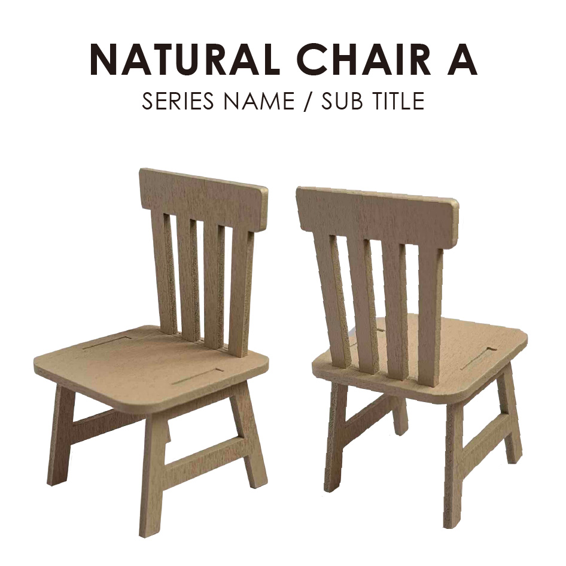
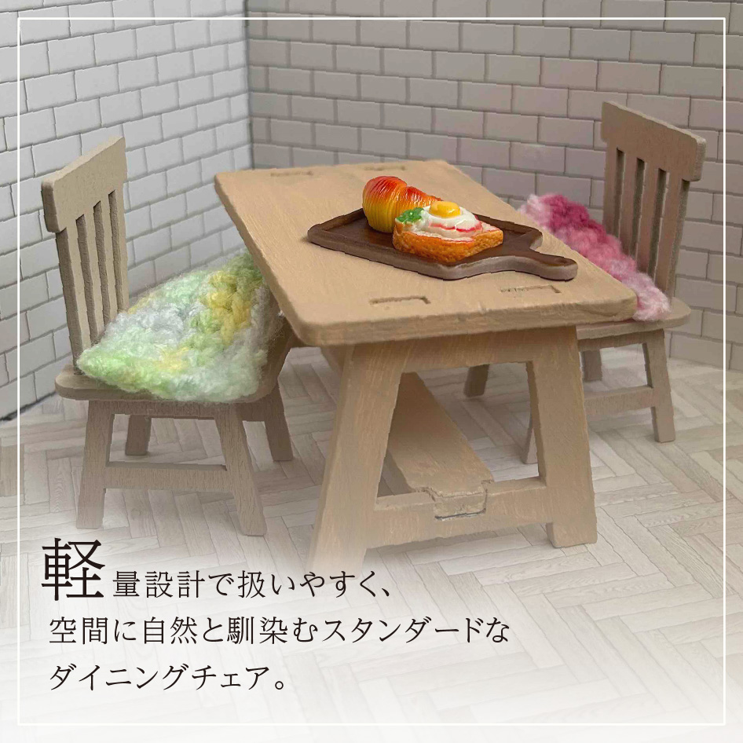
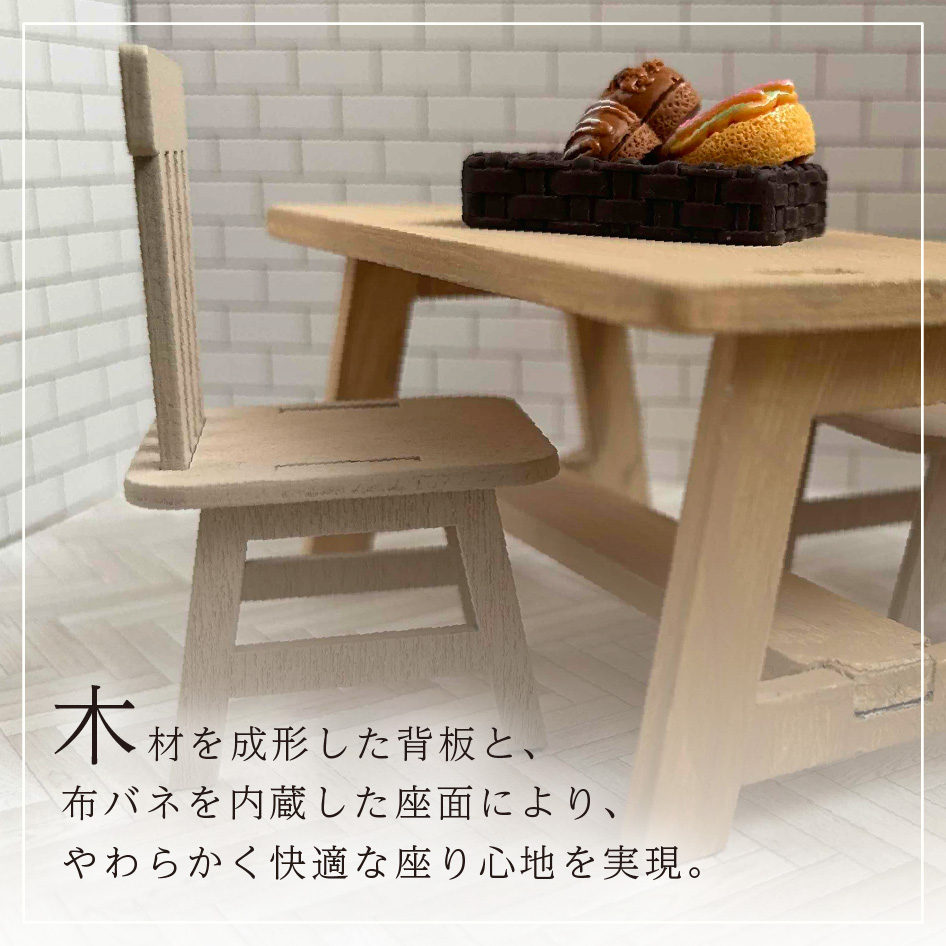
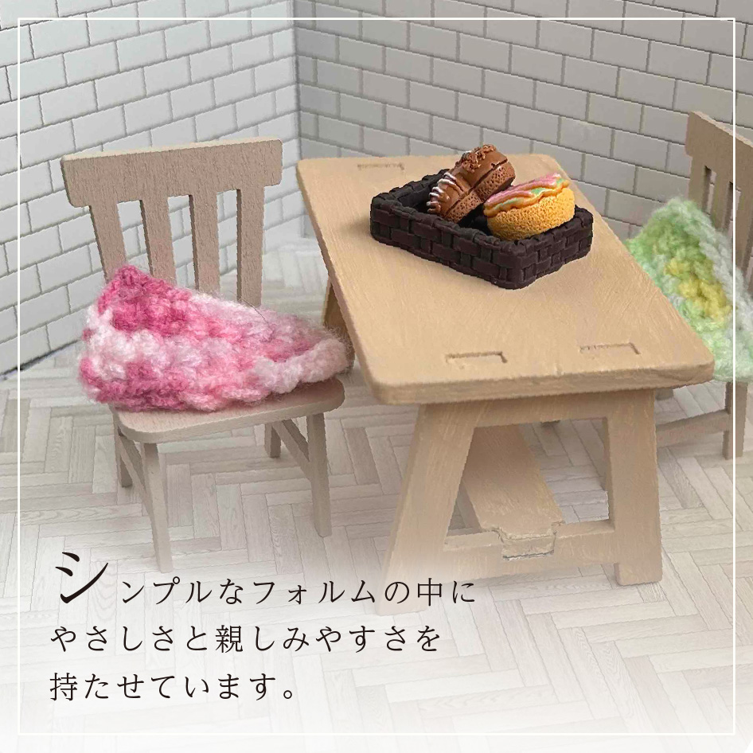
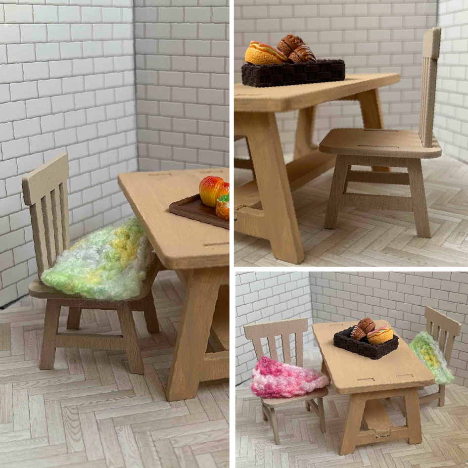
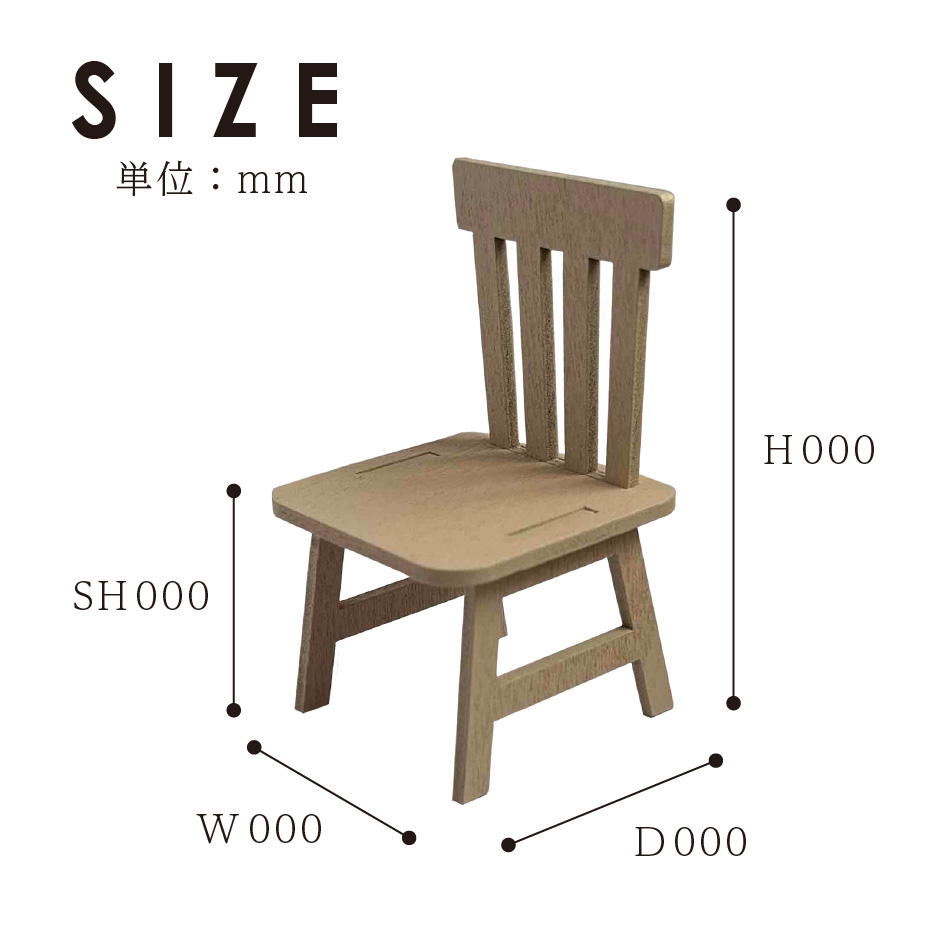
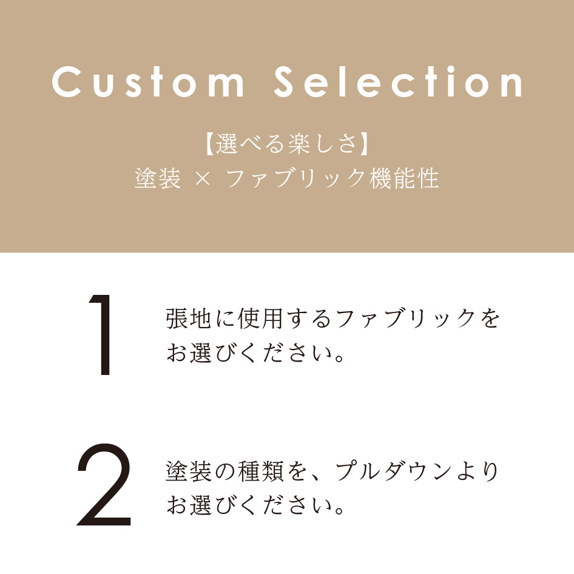
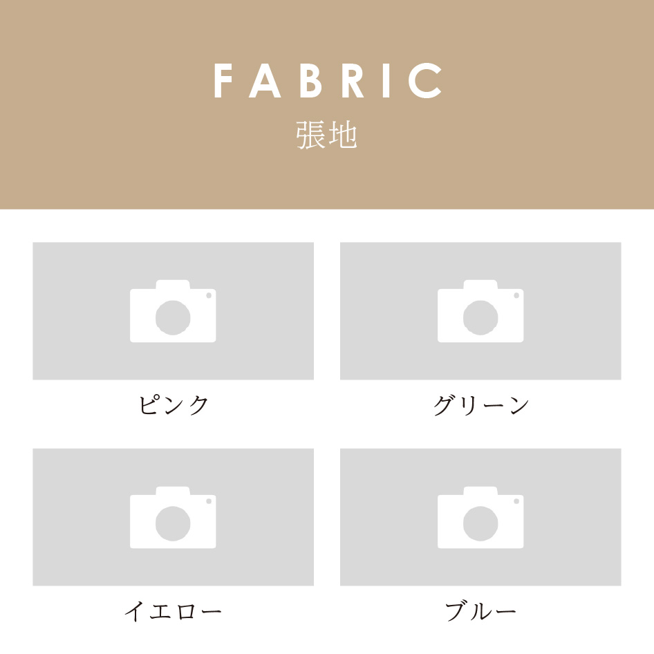
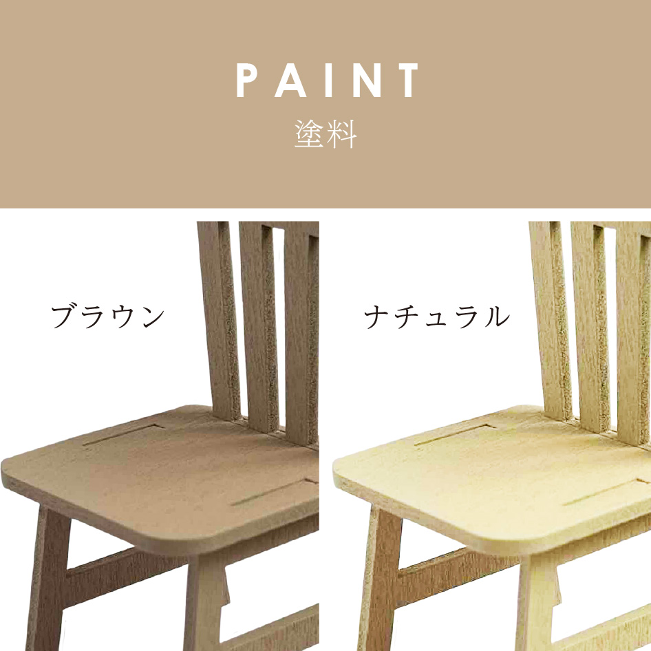

新規取り扱いメーカーの商品展開に伴い、ECサイトにおける商品ページを短期間で大量制作するプロジェクトに参画。
「ナチュラルで柔らかな印象の家具」というブランドコンセプトを軸に、購買導線を意識したページ設計と、効率的な運用フローの構築を行いました。

「軽い椅子が欲しい」との声にお応えしたダイニングチェア。
シンプルでありながら柔らかな印象のデザインです。








| NATURAL CHAIR A | |
|---|---|
| サイズ | W000×D000×H000mm×SH000mm |
| 重量 | 0.0kg |
| 主材 | 天然木、ウレタンフォーム |
| 張地 | ピンク / グリーン / イエロー / ブルー |
| 塗料 | ブラウン / ナチュラル |
| 特徴 |
軽量設計で扱いやすく、空間に自然と馴染むスタンダードなダイニングチェア。 木材を成形した背板と、布バネを内蔵した座面により、やわらかく快適な座り心地を実現。 シンプルなフォルムの中にやさしさと親しみやすさを持たせています。 |
| ご注意事項 | 商品ページ内の写真に写っている小物は商品には含まれません |
「軽い椅子が欲しい」との声にお応えしたダイニングチェア。
シンプルでありながら柔らかな印象のデザインです。
| サイズ | W000×D000×H000mm×SH000mm |
|---|---|
| 重量 | 3.0kg |
| 主材 | 天然木、ウレタンフォーム |
| 張地 | ピンク / グリーン / イエロー / ブルー |
| 塗料 | ブラウン / ナチュラル |
| 特徴 |
軽量設計で扱いやすく、空間に自然と馴染むスタンダードなダイニングチェア。 木材を成形した背板と、布バネを内蔵した座面により、やわらかく快適な座り心地を実現。 シンプルなフォルムの中にやさしさと親しみやすさを持たせています。 |
| ご注意事項 | 商品ページ内の写真に写っている小物は商品には含まれません。 |